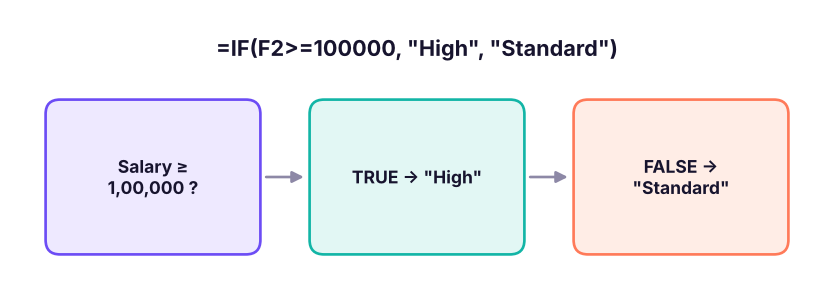

Extract, clean, combine and reformat text with LEFT, RIGHT, MID, LEN, FIND, SEARCH, CONCAT, TEXTJOIN, TEXT and the new TEXTSPLIT/TEXTBEFORE/TEXTAFTER. Then make decisions with AND, OR, NOT, IF, nested IF, IFS, SWITCH and IFERROR.
● Live classes 3–4✦ Excel for Microsoft 365, 2026Beginner⏱ 120 min
Real data arrives as text: order IDs like IN-2025-00042, product codes, email addresses, "Last, First" names, addresses and free-text comments. Text functions let you pull out the part you need (the year, the region code, the domain) so you can analyse it.
Measuring and extracting text
Function
What it returns
Example
Result
LEN(text)
Number of characters
=LEN("Pune")
4
LEFT(text, n)
First n characters
=LEFT("IN-2025-00042",2)
IN
RIGHT(text, n)
Last n characters
=RIGHT("IN-2025-00042",5)
00042
MID(text, start, n)
n characters from position start
=MID("IN-2025-00042",4,4)
2025
FIND(find, text, [start])
Position of text (case-sensitive, no wildcards)
=FIND("-","IN-2025-00042")
3
SEARCH(find, text, [start])
Position (not case-sensitive, wildcards allowed)
=SEARCH("pune","PUNE-411001")
1
XExtracting parts of an order ID
A
B
C
D
E
F
1
Order ID
Country =LEFT(A2,2)
Year =MID(A2,4,4)
Order no. =RIGHT(A2,5)
Length
Year as number
2
IN-2025-00042
IN
2025
00042
13
2025
3
IN-2023-01519
IN
2023
01519
13
2023
4
IN-2024-02988
IN
2024
02988
13
2024
B2=LEFT(A2,2)
C2=MID(A2,4,4)
D2=RIGHT(A2,5)
E2=LEN(A2)
F2=VALUE(MID(A2,4,4))
Each pattern is copied down/across to the other cells in its column.
Text functions always return text. MID(A2,4,4) returns the text "2025", not the number 2025. Wrap with VALUE() (or multiply by 1) to get a number you can compare or add.
When the position changes: FIND + MID
Codes rarely have fixed lengths. Combine FIND with LEFT, MID and RIGHT to cut at a delimiter wherever it is.
XSplitting emails at the @ sign
A
B
C
D
1
Email
Position of @
User name
Domain
2
kavya.iyer@abc.in
11
kavya.iyer
abc.in
3
imran@datacorp.com
6
imran
datacorp.com
4
harpreet.k@skillnavora.in
11
harpreet.k
skillnavora.in
B2=FIND("@",A2)
C2=LEFT(A2,FIND("@",A2)-1)
D2=MID(A2,FIND("@",A2)+1,100)
Each pattern is copied down/across to the other cells in its column.
Using a large number like 100 in MID simply means "take everything to the end". Alternatively use =RIGHT(A2,LEN(A2)-FIND("@",A2)).
XFirst and last name from 'First Last'
A
B
C
D
1
Full name
First name
Last name
Initials
2
Kavya Iyer
Kavya
Iyer
KI
3
Harpreet Kulkarni
Harpreet
Kulkarni
HK
4
Aarav Kulkarni
Aarav
Kulkarni
AK
B2=LEFT(A2,FIND(" ",A2)-1)
C2=MID(A2,FIND(" ",A2)+1,50)
D2=LEFT(A2,1)&LEFT(C2,1)
Each pattern is copied down/across to the other cells in its column.
FIND vs SEARCH
FIND
SEARCH
Case-sensitive
Yes: FIND("a","Apple") → #VALUE!
No: SEARCH("a","Apple") → 1
Wildcards *?
No
Yes
Not found
#VALUE!
#VALUE!
A common pattern to test whether text contains a word: =ISNUMBER(SEARCH("chair",B2)) returns TRUE or FALSE.
Changing and cleaning text
Function
Purpose
Example → Result
UPPER, LOWER, PROPER
Change case
=PROPER("new delhi") → New Delhi
TRIM
Remove extra spaces
=TRIM(" a b ") → a b
CLEAN
Remove non-printing characters
Line breaks from web data
SUBSTITUTE(text, old, new, [n])
Replace by content
=SUBSTITUTE("2025-04-27","-","/") → 2025/04/27
REPLACE(text, start, n, new)
Replace by position
=REPLACE("E101",1,1,"EMP") → EMP101
REPT(text, n)
Repeat text
=REPT("★",4) → ★★★★
EXACT(a, b)
Case-sensitive comparison
=EXACT("abc","ABC") → FALSE
TipCount how many times a character appears
=LEN(A2)-LEN(SUBSTITUTE(A2,",","")) counts commas in A2 (the length difference after removing them). Add 1 to count items in a comma-separated list.
Joining text
XThree ways to combine text
A
B
C
D
E
F
1
First
Last
City
With &
CONCAT
TEXTJOIN
2
Kavya
Iyer
Mumbai
Kavya Iyer (Mumbai)
Kavya Iyer
Kavya, Iyer, Mumbai
3
Imran
Delhi
Imran (Delhi)
Imran
Imran, Delhi
D2=A2&" "&B2&" ("&C2&")"
E2=CONCAT(A2," ",B2)
F2=TEXTJOIN(", ",TRUE,A2:C2)
D3=A3&" "&B3&" ("&C3&")"
E3=CONCAT(A3," ",B3)
F3=TEXTJOIN(", ",TRUE,A3:C3)
& is the quickest way to join a few pieces.
CONCAT joins ranges as well as single cells (it replaces the older CONCATENATE).
TEXTJOIN(delimiter, ignore_empty, …) puts a separator between items and can skip blanks, which is why row 3 shows "Imran, Delhi" without a double comma.
Numbers and dates inside text: TEXT
Joining a number or date directly shows its raw value: ="Sales: "&A2 gives Sales: 1234567.891, and a date shows as 46139. Use TEXT(value, format) to control how it appears.
XTEXT() inside labels
A
B
1
Value
Label formula result
2
1,234,568
Revenue: ₹1,234,568
3
27-04-2026
Report date: 27 Apr 2026
4
0.1834
Growth: 18.3%
5
27-04-2026
Day: Monday
B2="Revenue: ₹"&TEXT(A2,"#,##0")
B3="Report date: "&TEXT(A3,"dd mmm yyyy")
B4="Growth: "&TEXT(A4,"0.0%")
B5="Day: "&TEXT(A5,"dddd")
Splitting text
Text to Columns (Lesson 2) splits once into static values. Microsoft 365 adds formula versions that update automatically:
Function
Example
Result
TEXTBEFORE(text, delimiter, [instance])
=TEXTBEFORE("kavya.iyer@abc.in","@")
kavya.iyer
TEXTAFTER(text, delimiter, [instance])
=TEXTAFTER("IN-2025-00042","-",-1)
00042 (−1 = last hyphen)
TEXTSPLIT(text, col_delim, [row_delim])
=TEXTSPLIT("North,South,East",",")
spills North / South / East across three cells
XTEXTSPLIT spills into neighbouring cells (Microsoft 365)
A
B
C
D
E
1
Input
2
IN-2025-00042
IN
3
Furniture
Chairs
Apex Chair 412
4
Furniture > Chairs > Apex Chair 412
B2=TEXTSPLIT(A2,"-")
A4=TEXTJOIN(" > ",TRUE,A3:C3)
The blue cells are a spill range: one formula fills several cells. If any of those cells already contain something, the formula shows #SPILL! (Lesson 6).
2026 updateRegular expressions in Excel (2025)
Microsoft 365 has added REGEXTEST, REGEXEXTRACT and REGEXREPLACE. For example =REGEXEXTRACT(A2,"\d{6}") pulls a 6-digit PIN code out of an address, and =REGEXTEST(A2,"^[\w.]+@[\w.]+\.\w+$") checks that an email looks valid. They are covered with Python regex in the Python track.
Logical functions: TRUE or FALSE
Comparisons such as =B2>100 return TRUE or FALSE. Logical functions combine them:
Function
Returns TRUE when
Example
AND(c1, c2, …)
All conditions are TRUE
=AND(B2>=4, C2="Sales")
OR(c1, c2, …)
At least one condition is TRUE
=OR(D2="Delhi", D2="Mumbai")
NOT(c)
The condition is FALSE
=NOT(E2="Done")
XOR(c1, c2)
An odd number of conditions are TRUE
Rarely needed
XAND, OR and NOT on employee data
A
B
C
D
E
F
G
H
1
Name
Department
City
Rating
Salary
Sales & rating≥4
Metro city
Not HR
2
Kavya Iyer
HR
Mumbai
4
97000
FALSE
TRUE
FALSE
3
Isha Mehta
Sales
Delhi
3
57000
FALSE
TRUE
TRUE
4
Aadhya Nair
Sales
Bengaluru
5
45000
TRUE
FALSE
TRUE
5
Krishna Khan
Sales
Mumbai
3
156000
FALSE
TRUE
TRUE
F2=AND(B2="Sales",D2>=4)
G2=OR(C2="Delhi",C2="Mumbai")
H2=NOT(B2="HR")
Each pattern is copied down/across to the other cells in its column.
TipTRUE = 1, FALSE = 0
In arithmetic Excel treats TRUE as 1 and FALSE as 0. =SUM(--(D2:D21>=4)) counts ratings of 4 or more (the double minus converts TRUE/FALSE to 1/0). This trick powers SUMPRODUCT in Lesson 6.
IF: making decisions
=IF(logical_test, value_if_true, value_if_false)

IF checks a condition and returns one of two results.
XIF in practice
A
B
C
D
E
F
1
Name
Salary
Rating
Band
Bonus (10% if rating ≥ 4)
Pass/Fail target 80k
2
Kavya Iyer
97000
4
Standard
9,700
Pass
3
Imran Reddy
157000
3
High
0
Pass
4
Isha Mehta
57000
3
Standard
0
Fail
5
Vikram Joshi
75000
5
Standard
7,500
Fail
D2=IF(B2>=100000,"High","Standard")
E2=IF(C2>=4,B2*10%,0)
F2=IF(B2>=80000,"Pass","Fail")
Each pattern is copied down/across to the other cells in its column.
IF can return text, numbers, another formula's result, or "" (an empty-looking cell).
Combining IF with AND and OR
XIF + AND / OR
A
B
C
D
E
F
1
Name
Dept
Rating
Years
Promotion: rating ≥4 AND years ≥3
Review: rating ≤2 OR years <1
2
Kavya Iyer
HR
4
10
Eligible
OK
3
Saanvi Rao
HR
4
1
Not yet
OK
4
Aarav Kulkarni
HR
2
1
Not yet
Review
5
Neha Menon
Sales
3
0
Not yet
Review
E2=IF(AND(C2>=4,D2>=3),"Eligible","Not yet")
F2=IF(OR(C2<=2,D2<1),"Review","OK")
Each pattern is copied down/across to the other cells in its column.
Nested IF vs IFS
For more than two outcomes, you can put an IF inside another IF (nested IF), or use IFS, which is easier to read.
XGrading marks: nested IF and IFS give the same result
Each pattern is copied down/across to the other cells in its column.
Common mistakesOrder matters in nested IF and IFS
Excel stops at the first TRUE condition. If you test A2>=60 first, a mark of 92 returns "C". Always test from the highest threshold to the lowest (or lowest to highest with <). In IFS, end with TRUE, "default" so values that match nothing do not return #N/A.
SWITCH: matching exact values
When you compare one value against a list of exact matches, SWITCH is cleaner than nested IFs.
For long mappings, a lookup table with XLOOKUP (Lesson 7) is better than a long formula, because the mapping can be edited without touching formulas.
Handling errors: IFERROR and IFNA
XIFERROR replaces any error with a value you choose
A
B
C
D
1
Sales
Orders
Average order
With IFERROR
2
120000
40
3,000
3,000
3
0
0
#DIV/0!
0
4
95000
25
3,800
3,800
C2=A2/B2
D2=IFERROR(A2/B2,0)
C3=A3/B3
D3=IFERROR(A3/B3,0)
C4=A4/B4
D4=IFERROR(A4/B4,0)
IFERROR(value, value_if_error) catches every error type.
IFNA(value, value_if_na) catches only #N/A, typically from lookups, so real problems such as #REF! stay visible.
Watch outDo not hide problems
Wrapping every formula in IFERROR can hide genuine mistakes (a deleted column, a typo). Use it where an error is expected and meaningful (division by zero, value not found), and prefer IFNA for lookups.
Case: building columns for the Superstore data
Here is how analysts typically enrich the Superstore order table with text and logical formulas before analysis. The same logic in pandas gives us the real results on all 6,323 rows:
The crosstab already tells a business story: almost every order-line with a discount above 20% makes a loss. You will build this same view as a pivot table in Lesson 8.
New column
Excel formula (row 2)
Order year
=VALUE(MID(B2,4,4))
Brand
=TEXTBEFORE(N2," ") or =LEFT(N2,FIND(" ",N2)-1)
Profit flag
=IF(S2<0,"Loss","Profit")
Discount band
=IFS(Q2=0,"No discount",Q2<=0.2,"Up to 20%",TRUE,"Above 20%")
Do it with AIDo it with AI
Prompt: "Column B has order IDs like IN-2025-00042. Write an Excel formula to extract the year as a number, and another to flag orders where discount (Q) is above 20% and profit (S) is negative as 'Review'. Explain each part." Expected answer: =VALUE(MID(B2,4,4)) and =IF(AND(Q2>0.2,S2<0),"Review","").
Summary
Key takeaways
LEFT, RIGHT, MID extract text; FIND/SEARCH locate a character so you can cut at a delimiter.
Text functions return text: wrap with VALUE() to get numbers.
Join with &, CONCAT or TEXTJOIN (which can skip blanks); format numbers inside labels with TEXT.
TEXTSPLIT, TEXTBEFORE and TEXTAFTER split text with formulas that update.
AND needs all conditions, OR needs any; TRUE counts as 1 in arithmetic.
Use IFS (with a final TRUE) instead of deep nested IFs; order conditions from strictest to loosest.
Use IFERROR for expected errors and IFNA for lookups.
Quick quiz6 questions · tap an answer to check it
1. What does =MID("SKU-7781-BLU",5,4) return?
Answer: B. MID starts at position 5 ("7") and takes 4 characters: 7781.
2. A2 contains ravi.verma@xyz.com. Which formula returns ravi.verma?
Answer: A. FIND returns 11 (the @ position); take 10 characters from the left.
3. Which function joins A2:D2 with ", " and skips empty cells?
Answer: B. TEXTJOIN's second argument TRUE ignores empty cells.
4.=IF(A2>=60,"C",IF(A2>=75,"B","A")) is used to grade a mark of 85. What is the result?
Answer: A. The first test (85 >= 60) is TRUE, so "C" is returned immediately. The conditions are in the wrong order.
5. Why end an IFS formula with TRUE,"Other"?
Answer: B. TRUE always matches, so it acts as the "else" branch.
6. What does ="Total: "&TEXT(1234.5,"#,##0") return?
Answer: B. TEXT formats the number with separators and no decimals, rounding 1234.5 to 1,235.
ExerciseProduct codes
Codes look like FUR-CH-10001234 (category-subcategory-number). Write formulas for: (a) the category code; (b) the sub-category code; (c) the number as a value; (d) a flag "Furniture" when the category is FUR, otherwise "Other".
Show solution
(a) =LEFT(A2,3) or =TEXTBEFORE(A2,"-")
(b) =MID(A2,5,2) or =TEXTBEFORE(TEXTAFTER(A2,"-"),"-")
(c) =VALUE(RIGHT(A2,8)) or =VALUE(TEXTAFTER(A2,"-",-1))
(d) =IF(LEFT(A2,3)="FUR","Furniture","Other")
ExerciseCommission rules
Sales reps get: 10% commission if sales ≥ 5,00,000; 7% if ≥ 3,00,000; 4% if ≥ 1,00,000; otherwise 0. Reps in the "Trainee" grade get half. Write one formula (sales in B2, grade in C2).
Q: Difference between FIND and SEARCH?
FIND is case-sensitive and does not allow wildcards; SEARCH is not case-sensitive and supports * and ?. Both return #VALUE! when the text is not found.
Q: How would you extract the domain from an email address?=MID(A2,FIND("@",A2)+1,LEN(A2)) or, in Microsoft 365, =TEXTAFTER(A2,"@").
Q: Nested IF or IFS?
IFS for readability when testing several conditions in order; SWITCH for exact matches of one value; a lookup table when the mapping is long or changes often.
Practise more online
Free, trusted places to test yourself on this topic. Links open the original site in a new tab.